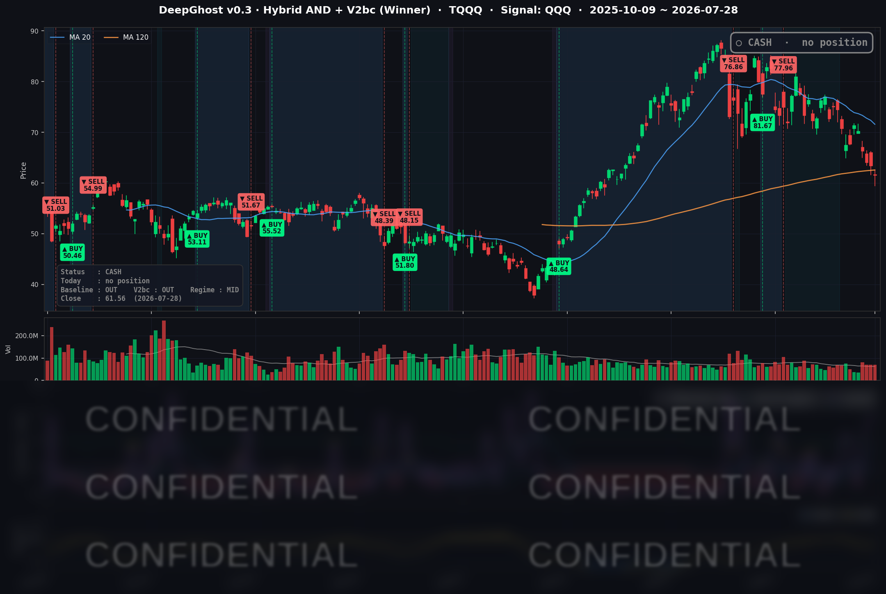

👻 매일 시그널과 히스토리를 홈페이지에서 한눈에 → www.ghostai.co.kr
마이크론이 -8.85% 붕괴하며 반도체가 4일 연속 무너졌고 TQQQ는 오늘도 -2.90% 급락했지만, 우리는 이번 조정장을 피했습니다. 이것이 Ghost.AI의 실력입니다.
📊 오늘의 매매 신호
| 항목 | 내용 |
|---|---|
| 오늘 할 일 | ✅ 아무것도 안 해도 됩니다 |
| 포지션 상태 | 💵 현금 보유 중 (OUT OF POSITION) |
| 현금 보유 기간 | 2026-06-29 ~ 2026-07-28 (21거래일) |
| TQQQ 종가 | $61.56 (-2.90%) |
지수 표면은 조용했지만 그 아래에서는 반도체가 4일 연속 무너지며 나스닥100을 끌어내렸고, 레버리지 나스닥인 TQQQ는 -2.90%로 급락했습니다. 전략은 이 구간 내내 현금을 유지하고 있어, 하루의 최대 손실 구역(반도체·레버리지 나스닥)에 노출되지 않은 관망 상태입니다.
TQQQ 시그널 — OUT OF POSITION
현재 상태: 현금 보유 중 | 신규 진입·청산 신호 없음

이날 나스닥100(QQQ)은 -0.97%, 레버리지 TQQQ는 -2.90%로 밀렸습니다. 다우가 +1.03%로 오르는 사이 나스닥이 홀로 눌린 명확한 로테이션 장이었고, 전략의 관점에서 이런 국면은 "방향성 확신이 낮은 구간"에 해당합니다. 상방으로 밀어붙이는 모멘텀이 뚜렷하지 않아 신규 진입을 정당화할 근거가 부족했고, 그 결과 현금을 이어가며 하루 앞으로 다가온 FOMC(7/29) 결과를 기다리는 그림입니다. 결과적으로, TQQQ를 들고 있었다면 -2.90%의 손실 구간에 노출됐을 하루를 관망으로 비켜간 셈입니다.
오늘 미국 시장 — 시황 요약
지수 마감
| 지수 | 종가 | 등락률 |
|---|---|---|
| S&P 500 | 7,428.78 | +0.21% |
| Nasdaq Composite | 24,876.91 | -0.22% |
| Dow Jones | 52,747.32 | +1.03% |
| Russell 2000 | 2,953.80 | +0.20% |
지수 방향이 갈린 하루였습니다. 경기·가치·블루칩이 많은 다우는 +1.03%로 뚜렷하게 올랐고 소형주 러셀 2000도 강보합이었던 반면, 대형 기술주 비중이 큰 나스닥은 -0.22%로 홀로 뒤로 밀렸습니다. S&P 500(+0.21%)은 그 사이 어딘가에서 소폭 상승했습니다. 반도체의 급락이 나스닥을 짓눌렀고, 금리·유가 하락의 수혜는 그 빈자리를 메운 다우·경기민감·소형주로 흘러간 전형적인 "로테이션 장"이었습니다.
국채 금리 동향
| 만기 | 수익률 | 전일 대비 |
|---|---|---|
| 3개월 | 3.760% | -3.7bp |
| 5년 | 4.361% | -3.6bp |
| 10년 | 4.604% | -3.7bp |
| 30년 | 5.096% | -2.9bp |
전 구간에서 금리가 3-4bp씩 나란히 내렸습니다(거의 평행 이동). FOMC 결정을 하루 앞두고 위험선호가 뒤로 물러난 데다 유가 급락으로 물가 기대까지 완화되며 채권이 소폭 강세(수익률 하락)를 보였습니다. 금리 하락 자체는 성장주에 우호적인 배경이지만, 이날은 반도체발 위험회피가 그 효과를 압도했습니다 — 그래서 금리 하락의 수혜가 나스닥이 아니라 다우·소형주로 흘렀습니다. 장·단기 금리차(10년−3개월 +84.4bp)는 여전히 정상(우상향) 곡선을 유지했고, 장기물은 30년 5.1%로 절대 레벨이 높은 편입니다.
연준 발언 & 금리 패스
당일 신규 연준 발언은 없었습니다. FOMC(7/28-29) 개막 중의 관례적 '블랙아웃' 기간이라 위원들의 정책 발언이 차단된 상태입니다. 금리 결정은 7/28이 아니라 익일 7/29(수) 발표이며, 의장 기자회견도 같은 날 오후로 예정돼 있습니다. 시장은 7월 회의에서 금리 동결(현 정책금리 3.50-3.75%)을 유력(약 63-65%)하게 보되, 9월 인상 가능성(약 35%)을 계속 저울질하고 있습니다. 직전까지의 톤은 "인플레이션이 여전히 높다"는 매파 쪽이었던 만큼, 성명서 문구와 기자회견에서 9월 경로를 어떻게 시사하는지가 관전 포인트입니다.
오늘의 핵심 이슈
- 반도체 4일 연속 급락 — 로테이션을 촉발했습니다. 반도체 ETF가 4거래일째 밀리며 지수를 끌어내렸습니다. 중국 메모리 업체(CXMT)의 증시 데뷔, 낸드(NAND) 공급과잉 우려, AI 투자 지속성에 대한 회의, 삼성 부진 실적, 신규 관세 우려가 복합적으로 작용했습니다. 이 약세가 성장주(나스닥)를 누르고 자금을 다우·경기민감으로 밀어냈습니다.
- 국제 유가 급락 — 물가엔 우호, 에너지주엔 부담. 중동 긴장 완화(미·이란 교전 중단, 호르무즈 해협 운항 재개)로 그동안 붙어 있던 지정학 프리미엄이 빠지며 유가가 크게 내렸습니다. 물가 기대 완화로 채권 강세·다우 강세를 뒷받침한 재료입니다.
- FOMC 결정 대기(7/29). 시장은 동결을 유력시하면서도 9월 인상 가능성을 계속 재고 있습니다. 결정 하루 전 관망 속에 금리가 소폭 내리고 변동성 지표도 하락했습니다. 반도체 기업 퀄컴의 실적 발표(7/29)도 같은 날 대기 중입니다.
변동성 & 투자심리
- VIX: 18.21 (전일 18.67 대비 -2.46%). 반도체 급락에도 지수 변동성은 오히려 내려 20을 밑도는 안정 구간을 유지했습니다. 로테이션이 지수 레벨을 방어하며 헤지 수요를 눌렀음을 시사합니다.
- 공포탐욕 지수(CNN Fear & Greed): 이날 확정 수치를 1차 출처로 교차검증하지 못해 단정하지 않되, 낮은 변동성과 다우 강세를 종합하면 '중립~탐욕 쪽 완만' 정도로 추정됩니다.
- 종합하면, 지수 방어와 VIX 하락은 표면적 안정을 보여주지만 나스닥·레버리지(TQQQ -2.90%) 약세는 AI 밸류에이션 재평가 우려를 반영합니다. FOMC를 앞둔 관망 성격이 짙었던 혼조 장이었습니다.
매크로 & 원자재
- WTI 원유: $81.38 (-1.49%)
- Brent 원유: $85.98 (-2.69%)
- 금(Gold): $4,023.10 (-1.26%)
유가는 지정학 긴장 완화에 내렸고, 안전자산인 금까지 함께 하락했습니다. 지정학 프리미엄이 걷히면서 위험회피가 부분적으로 되돌려진 결과로 보입니다.
주요 종목 동향
| 종목 | 전일 종가 | 당일 종가 | 등락률 | 비고 |
|---|---|---|---|---|
| AAPL | 336.91 | 340.08 | +0.94% | 대형주 로테이션 수혜 |
| NVDA | 196.51 | 197.01 | +0.25% | 반도체 약세 속 상대적 선방(강보합) |
| MSFT | 389.10 | 393.35 | +1.09% | 반도체와 차별화, 소프트웨어 대형주 강세 |
| GOOGL | 326.56 | 333.71 | +2.19% | 커버리지 상승 2위, 커뮤니케이션 강세 |
| META | 593.87 | 593.41 | -0.08% | 보합 |
| AMZN | 231.39 | 230.86 | -0.23% | 소폭 약세 |
| TSLA | 309.22 | 307.44 | -0.58% | 소폭 약세 |
| NFLX | 70.40 | 72.39 | +2.83% | 커버리지 최고 상승 — 호실적(구독·마진) 반영 |
| AVGO | 383.22 | 380.91 | -0.60% | 반도체군이나 상대적 방어 |
| QCOM | 170.04 | 162.88 | -4.21% | 칩 셀오프, 7/29 실적 발표 예정 |
| INTC | 91.67 | 86.30 | -5.86% | 삼성 부진 실적·관세 우려·PC/서버 수요 회의 |
| MU | 900.20 | 820.53 | -8.85% | 당일 최대 급락 — 중국 메모리 데뷔·낸드 공급과잉·투자의견 하향 |
Ghost.AI — Quantitative AI Investment
Model: DeepGhost v0.3 | Transformer-Based Deep Learning
Coverage: 13 tickers | Updated every trading day after US market close
⚠️ 본 자료는 정보 제공 목적으로만 작성되었으며 투자 권유가 아닙니다. 모든 투자의 책임은 투자자 본인에게 있습니다. 과거 성과가 미래 수익을 보장하지 않습니다.
[유의사항]
- 본 서비스는 불특정 다수를 대상으로 발행되는 단방향 정보 제공 서비스이며, 투자자 개인의 재산 상황·투자 목적·위험 선호도를 반영한 개별 투자 조언이 아닙니다.
- 고스트에이아이 주식회사는 고객과 쌍방향 의사소통(개별 상담, 맞춤형 자문 등)을 제공하지 않습니다.
- 본 콘텐츠는 투자 권유 또는 매매 주문의 청약·청약의 권유에 해당하지 않으며, 최종 투자 판단 및 그에 따른 손익의 책임은 전적으로 투자자 본인에게 있습니다.
고스트에이아이 주식회사